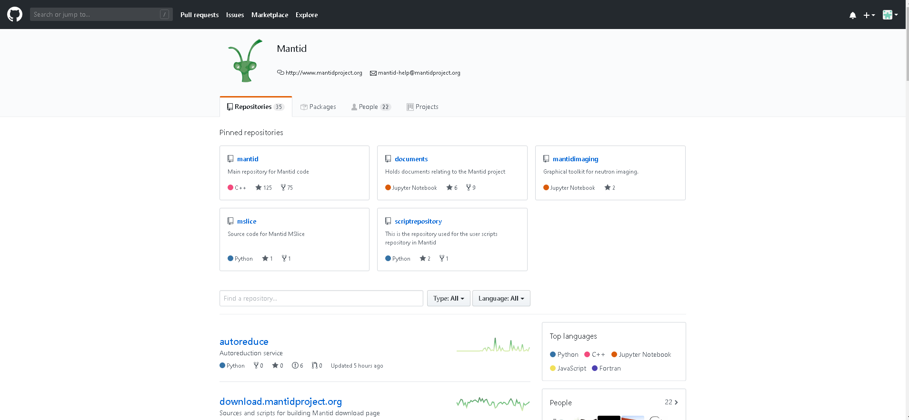
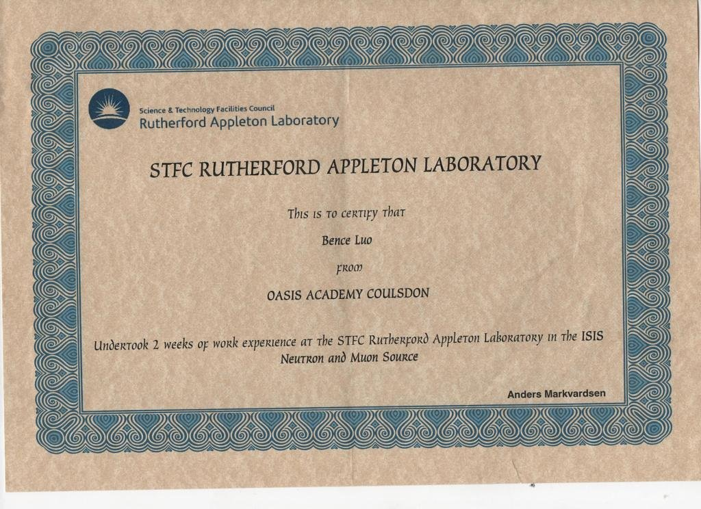

AutoReduce Compression (Project)
At the Rutherford Appleton Laboratory, Dominic Oram provided me with the opportunity to take part in his project which consisted of a team of 30 developers. The Project’s aim was to create a system to handle data received by the particle accelerators and compress the useful data from it.
During the Project, I got introduced on how to use Git and GitHub My main responsibility was to analyse some features already implemented and improve some features around the backend of the program.
One of the features implemented was the endOfRun.py which checks the lastrun.txt every second. However, this was inefficient and I was recommended by Dominic to improve this by using a file watcher.
What I've Leanrt
- The principles of how Run-length encoding and Huffman coding which are ways to compress data but still be able to retrieve it later.
- I’ve finally understood deeply what zip files and archives are.
- How to collaborate with a team using useful version control and unit testing technology called GitHub.
GitHub Contribution:
Certificate:
